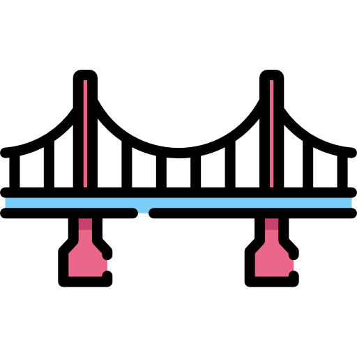
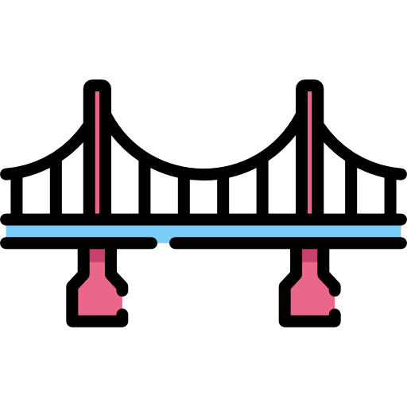

I'm Anton.
a bridge enginer.


I am bridge designer with more than 15 years of hands-on design experience with bridges and transport structures of varying complexity. Strong understanding of structural behaviors with an ability to translate this into effective structural design.
Developed and successfully implemented projects for the construction of more than 20 extra-class bridges, such as a new bridge crossing over the Vakh River on the Nizhnevartovsk-Strezhevoy Road, the bridge over the Moscow Canal, a new bridge over the Yenisei River in Krasnoyarsk, the bridge through the Kozhukhovsky Zaton in Moscow, among others. - Took part in developing the incremental launching method for bridge decks with a length greater than 1500 m in projects such as the bridge over the Volga River on the M-12 highway from Moscow-Kazan (total length 3400 m) and the new bridge over the Ob River in Surgut (total length 1600 m).
Lead Engineer "Institute Giprostroymost - St. Petersburg" JSC (design of bridges and transport structures) December 2015 - present (6 years 10 months) Technician - Engineer - Lead Engineer - Head of Project Group “Transmost” JSC (design of bridges and transport structures) May 2007 - December 2015 (8 years 8 months)